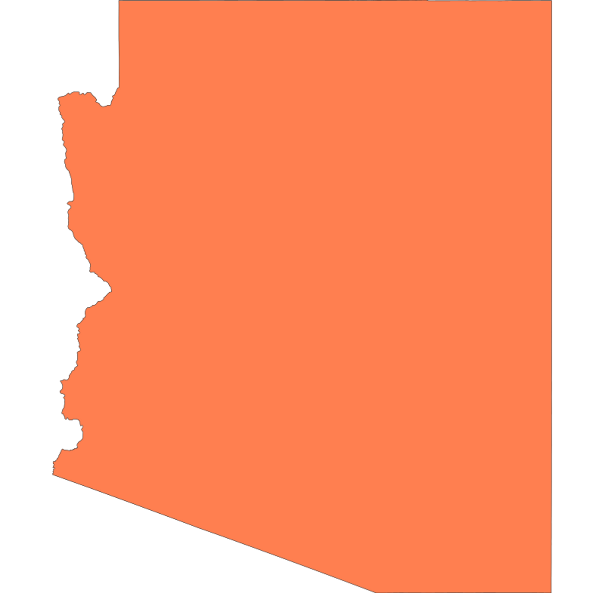

Saboten Con is an American anime convention held in Phoenix, Arizona and organized by Monkey Paw Entertainment. The convention is held on Labor Day weekend and lasts for 4 days (Fri-Mon). It is currently hosted at the Sheraton Downtown Phoenix. Saboten Con is the largest anime convention in Arizona with attendance reaching over 23,000 (unique) / 50,000 (turnstile) for the 2021 event.
What's with the name?
Saboten Con gains its name by combining the Japanese name for Cactus "Saboten" and adding the word "con" for convention at the end. The cactus helps reference the conventions roots in Arizona which is home to many species of cactus.
What can I do there?
Saboten Con is a place where any Anime/Manga fan can find ways to have fun. For example:
- Programming tracks for all ages and genres
- Main events hall with large programming
- Vendor hall to shop
- Workshops to help you learn
- Themed evening raves to help you party all night
- Masquerade to show off your talents
- Maid and Anime Cafes to entertain you